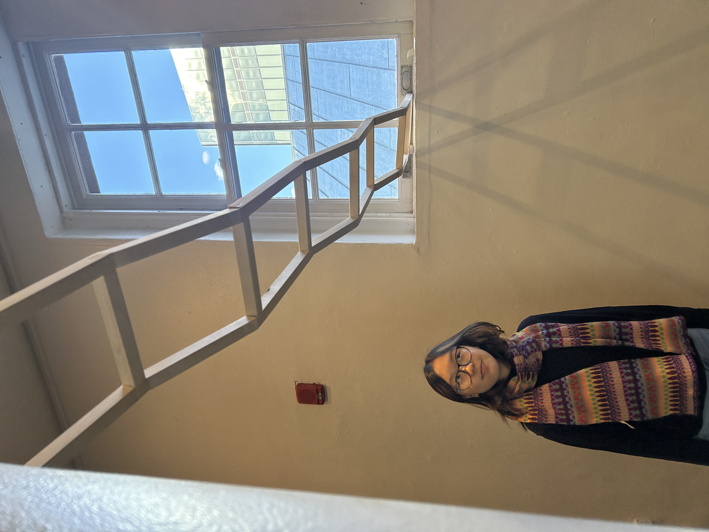
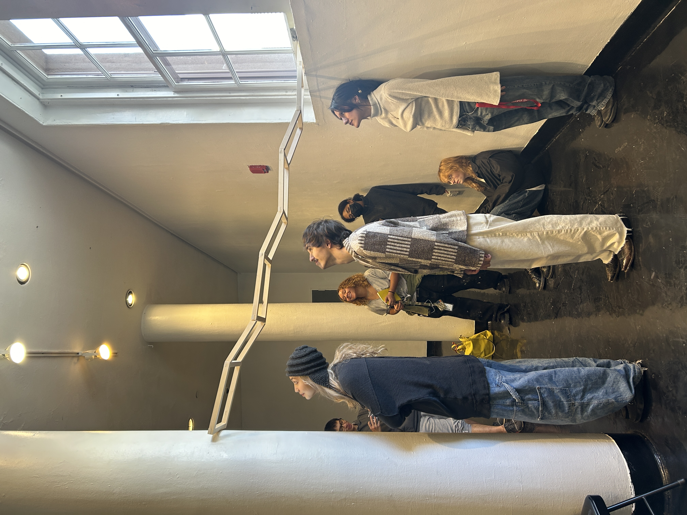
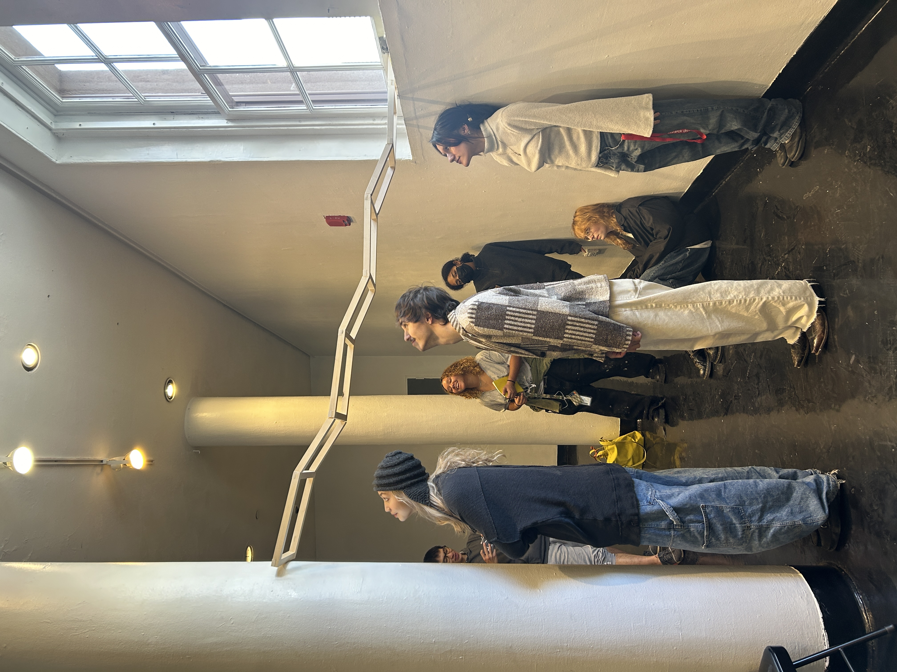

About the Artist
Samantha Kye is a New York City–based artist and sophomore BFA student at The Cooper Union. Her practice is shaped by a long-standing passion for creativity and a wide range of influences, drawing inspiration from daily life, travels, and her encounters with diverse ideas and inspirations. Through her work, Samantha transforms personal experiences into visual narratives, offering audiences intimate glimpses into her world.

Works

 
